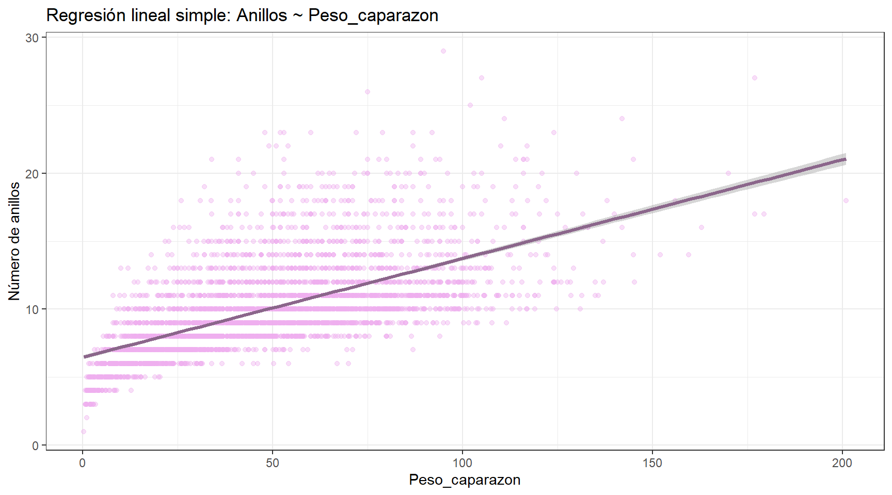
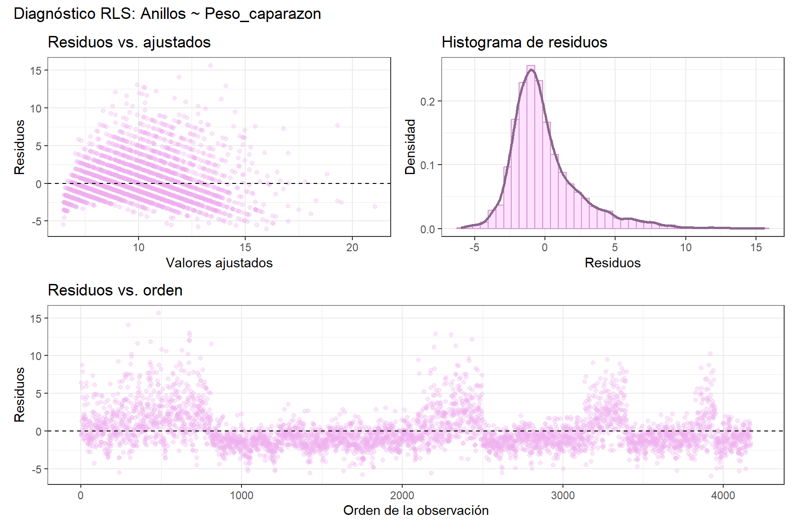
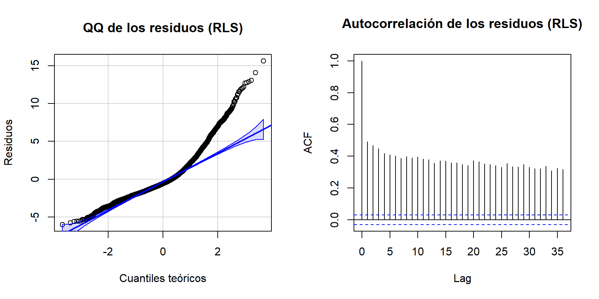
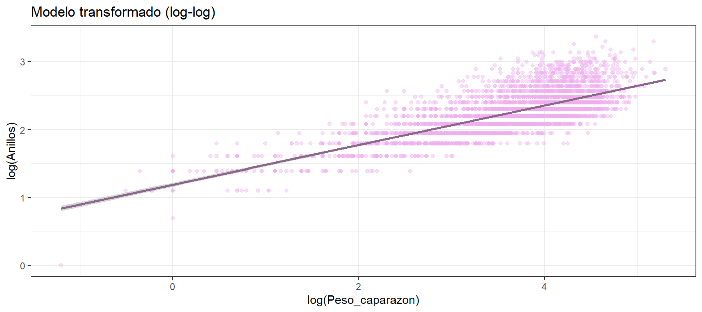
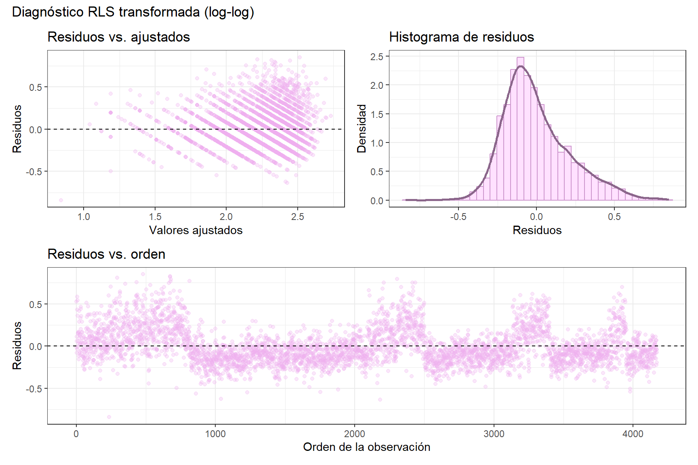
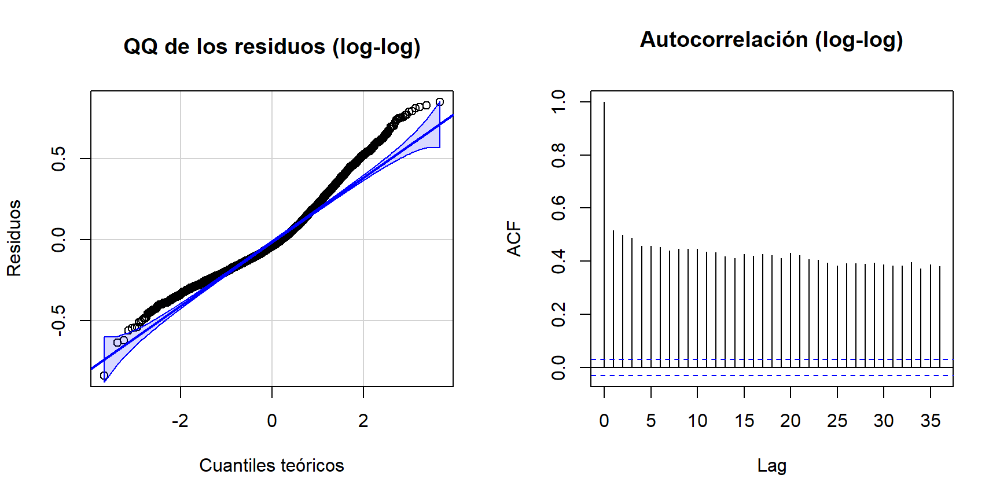

Capitulo 11 Regresión lineal simple
Se usa como predictor la variable con mayor correlación con Anillos: Peso_caparazon.
\[\text{Anillos}_i = \beta_0 + \beta_1\,\text{Peso_caparazon}_i + \varepsilon_i,\qquad \varepsilon_i \sim N(0, \sigma^2)\]
11.1 Ajuste del modelo
f_rls <- reformulate(mejor_pred, response = "Anillos")
rls <- eval(bquote(lm(.(f_rls), data = abalone)))
summary(rls)##
## Call:
## lm(formula = Anillos ~ Peso_caparazon, data = abalone)
##
## Residuals:
## Min 1Q Median 3Q Max
## -5.9836 -1.6023 -0.5854 0.9456 15.6319
##
## Coefficients:
## Estimate Std. Error t value Pr(>|t|)
## (Intercept) 6.466010 0.077253 83.70 <2e-16 ***
## Peso_caparazon 0.072653 0.001397 52.02 <2e-16 ***
## ---
## Signif. codes: 0 '***' 0.001 '**' 0.01 '*' 0.05 '.' 0.1 ' ' 1
##
## Residual standard error: 2.51 on 4169 degrees of freedom
## Multiple R-squared: 0.3936, Adjusted R-squared: 0.3934
## F-statistic: 2706 on 1 and 4169 DF, p-value: < 2.2e-16## 2.5 % 97.5 %
## (Intercept) 6.3145961 6.61742414
## Peso_caparazon 0.0699158 0.07539071## Analysis of Variance Table
##
## Response: Anillos
## Df Sum Sq Mean Sq F value Pr(>F)
## Peso_caparazon 1 17053 17052.5 2705.9 < 2.2e-16 ***
## Residuals 4169 26273 6.3
## ---
## Signif. codes: 0 '***' 0.001 '**' 0.01 '*' 0.05 '.' 0.1 ' ' 1# Intervalo de confianza para sigma^2
gl_rls <- df.residual(rls)
s2_rls <- s_rls$sigma^2
ic_s2 <- c(gl_rls * s2_rls / qchisq(0.975, gl_rls),
gl_rls * s2_rls / qchisq(0.025, gl_rls))
ic_s2## [1] 6.039953 6.581507Interpretación: El modelo de regresión lineal muestra una relación positiva y estadísticamente significativa entre el peso del caparazón y el número de anillos (p < 0,001). El coeficiente de determinación (R² = 0,3936) indica que el peso del caparazón explica aproximadamente el 39,36 % de la variabilidad del número de anillos. En conclusión, a mayor peso del caparazón, tiende a aumentar el número de anillos, aunque el modelo no explica toda su variación.
abalone %>%
ggplot(aes(x = .data[[mejor_pred]], y = Anillos)) +
geom_point(color = col_point, alpha = 0.4) +
geom_smooth(method = "lm", se = TRUE, color = col_dark, linewidth = 1.2) +
labs(title = paste("Regresión lineal simple: Anillos ~", mejor_pred),
x = mejor_pred, y = "Número de anillos") +
theme_bw()
INTERPRETACIÓN El gráfico muestra una relación positiva entre el peso del caparazón y el número de anillos. Se observa que, a medida que aumenta el peso del caparazón, también tiende a aumentar el número de anillos. Sin embargo, los datos presentan cierta dispersión, lo que indica que el peso no explica completamente las variaciones en la cantidad de anillos. Esto confirma la relación positiva encontrada en el modelo de regresión lineal.
11.2 Análisis de residuales y validación de supuestos
graficos_residuos <- function(modelo, titulo) {
df <- tibble(ajustados = fitted(modelo), residuos = residuals(modelo),
orden = seq_along(residuos))
g1 <- ggplot(df, aes(ajustados, residuos)) +
geom_point(alpha = 0.3, color = col_point) +
geom_hline(yintercept = 0, linetype = "dashed") +
labs(title = "Residuos vs. ajustados", x = "Valores ajustados", y = "Residuos") +
theme_bw()
g2 <- ggplot(df, aes(residuos)) +
geom_histogram(aes(y = after_stat(density)), bins = 40,
fill = col_fill, color = col_line) +
geom_density(color = col_dark, linewidth = 1) +
labs(title = "Histograma de residuos", x = "Residuos", y = "Densidad") +
theme_bw()
g3 <- ggplot(df, aes(orden, residuos)) +
geom_point(alpha = 0.3, color = col_point) +
geom_hline(yintercept = 0, linetype = "dashed") +
labs(title = "Residuos vs. orden", x = "Orden de la observación", y = "Residuos") +
theme_bw()
print((g1 + g2) / g3 + plot_annotation(title = titulo))
}
pruebas_supuestos <- function(modelo) {
e <- residuals(modelo)
sw <- shapiro.test(e)
tm <- t.test(e, mu = 0)
bp <- bptest(modelo)
ncv <- ncvTest(modelo)
dw <- durbinWatsonTest(modelo)
tibble(
Supuesto = c("Normalidad", "Media cero", "Varianza constante",
"Varianza constante", "Independencia"),
Prueba = c("Shapiro-Wilk", "t de una muestra (mu = 0)", "Breusch-Pagan",
"ncvTest (car)", "Durbin-Watson"),
Estadistico = c(sw$statistic, tm$statistic, bp$statistic, ncv$ChiSquare, dw$dw),
p_valor = c(sw$p.value, tm$p.value, bp$p.value, ncv$p, dw$p),
Conclusion = ifelse(p_valor < 0.05, "No se cumple (se rechaza H0)",
"Se cumple (no se rechaza H0)")
)
}
Interpretación: Los gráficos evidencian que los residuos presentan una distribución asimétrica, alejada de la normalidad, con algunos valores extremos. Asimismo, se observa una dispersión irregular en los residuos respecto a los valores ajustados y a lo largo del orden de las observaciones, lo que sugiere posibles problemas de heterocedasticidad. Estos comportamientos indican que el modelo presenta limitaciones en el cumplimiento de los supuestos de regresión lineal.par(mfrow = c(1, 2))
invisible(qqPlot(residuals(rls), main = "QQ de los residuos (RLS)",
xlab = "Cuantiles teóricos", ylab = "Residuos", id = FALSE))
acf(residuals(rls), main = "Autocorrelación de los residuos (RLS)")
Interpretación: El gráfico QQ muestra que los residuos se alejan de la línea de referencia, especialmente en los valores extremos, lo que evidencia que no siguen una distribución normal. Por otra parte, el gráfico de autocorrelación presenta valores positivos que superan los límites de confianza en varios rezagos, indicando una fuerte dependencia entre los residuos. Esto sugiere que no se cumple el supuesto de independencia de los errores y que el modelo presenta limitaciones en su ajuste estadístico.
| Supuesto | Prueba | Estadistico | p_valor | Conclusion |
|---|---|---|---|---|
| Normalidad | Shapiro-Wilk | 0.8926 | 0 | No se cumple (se rechaza H0) |
| Media cero | t de una muestra (mu = 0) | 0.0000 | 1 | Se cumple (no se rechaza H0) |
| Varianza constante | Breusch-Pagan | 124.2477 | 0 | No se cumple (se rechaza H0) |
| Varianza constante | ncvTest (car) | 336.2632 | 0 | No se cumple (se rechaza H0) |
| Independencia | Durbin-Watson | 1.0161 | 0 | No se cumple (se rechaza H0) |
INTERPRETACIÓN Las pruebas indican que el modelo cumple con el supuesto de media cero, pero no cumple con los de normalidad (p < 0,001), varianza constante (p < 0,001) e independencia (p < 0,001). Esto evidencia que los residuos presentan desviaciones importantes respecto a los supuestos de la regresión lineal, por lo que el modelo debe interpretarse con precaución.
11.3 Transformación para mejorar el ajuste
Los anillos son un conteo positivo cuya variabilidad crece con la media, y la relación con el peso es curva (crecimiento que se desacelera). Entre las transformaciones vistas, el modelo log-log corrige ambos problemas a la vez:
\[\log(\text{Anillos}_i) = \beta_0 + \beta_1 \log(\text{Peso_caparazon}_i) + \varepsilon_i\]
f_rls_log <- as.formula(paste0("log(Anillos) ~ log(", mejor_pred, ")"))
rls_log <- eval(bquote(lm(.(f_rls_log), data = abalone)))
summary(rls_log)##
## Call:
## lm(formula = log(Anillos) ~ log(Peso_caparazon), data = abalone)
##
## Residuals:
## Min 1Q Median 3Q Max
## -0.83950 -0.14726 -0.04125 0.11959 0.85134
##
## Coefficients:
## Estimate Std. Error t value Pr(>|t|)
## (Intercept) 1.190047 0.015259 77.99 <2e-16 ***
## log(Peso_caparazon) 0.291160 0.004105 70.93 <2e-16 ***
## ---
## Signif. codes: 0 '***' 0.001 '**' 0.01 '*' 0.05 '.' 0.1 ' ' 1
##
## Residual standard error: 0.215 on 4169 degrees of freedom
## Multiple R-squared: 0.5468, Adjusted R-squared: 0.5467
## F-statistic: 5031 on 1 and 4169 DF, p-value: < 2.2e-16## 2.5 % 97.5 %
## (Intercept) 1.1601401 1.2199547
## log(Peso_caparazon) 0.2831146 0.2992061Interpretación: El modelo de regresión logarítmica muestra una relación positiva y estadísticamente significativa entre el peso del caparazón y el número de anillos (p < 0,001). El coeficiente de determinación (R² = 0,5468) indica que el modelo explica el 54,68 % de la variabilidad del número de anillos. Además, el coeficiente de 0,291 indica que un aumento del 1 % en el peso del caparazón se asocia aproximadamente con un aumento del 0,291 % en el número de anillos. Esto representa una mejora en la capacidad explicativa respecto al modelo lineal simple.
abalone %>%
ggplot(aes(x = log(.data[[mejor_pred]]), y = log(Anillos))) +
geom_point(color = col_point, alpha = 0.4) +
geom_smooth(method = "lm", color = col_dark) +
labs(title = "Modelo transformado (log-log)",
x = paste0("log(", mejor_pred, ")"), y = "log(Anillos)") +
theme_bw()
Interpretación: El gráfico muestra una relación positiva entre el logaritmo del peso del caparazón y el logaritmo del número de anillos. Se observa que, a medida que aumenta el peso del caparazón, también tiende a aumentar el número de anillos. Los datos presentan una tendencia aproximadamente lineal, aunque existe cierta dispersión alrededor de la recta de regresión.

Interpretación: Los gráficos muestran una mejora en el comportamiento de los residuos respecto al modelo original; sin embargo, todavía se observa cierta asimetría en su distribución y una dispersión irregular frente a los valores ajustados. Además, los residuos presentan patrones a lo largo del orden de las observaciones, lo que sugiere que persisten problemas de heterocedasticidad y posible dependencia. La transformación logarítmica mejora el ajuste, pero no logra corregir completamente las limitaciones del modelo.par(mfrow = c(1, 2))
invisible(qqPlot(residuals(rls_log), main = "QQ de los residuos (log-log)",
xlab = "Cuantiles teóricos", ylab = "Residuos", id = FALSE))
acf(residuals(rls_log), main = "Autocorrelación (log-log)")
Interpretación: El gráfico QQ muestra que los residuos se aproximan a la línea de referencia en la parte central, pero presentan desviaciones en los extremos, indicando que la normalidad no se cumple completamente. Por otra parte, el gráfico de autocorrelación evidencia correlaciones positivas significativas en los distintos rezagos, lo que indica dependencia entre los residuos. A pesar de la transformación logarítmica, persisten problemas de normalidad e independencia en el modelo.
sup_rls_log <- pruebas_supuestos(rls_log)
sup_rls_log %>% tabla("Pruebas de supuestos de la RLS transformada", d = 4)| Supuesto | Prueba | Estadistico | p_valor | Conclusion |
|---|---|---|---|---|
| Normalidad | Shapiro-Wilk | 0.9592 | 0.0000 | No se cumple (se rechaza H0) |
| Media cero | t de una muestra (mu = 0) | 0.0000 | 1.0000 | Se cumple (no se rechaza H0) |
| Varianza constante | Breusch-Pagan | 5.1846 | 0.0228 | No se cumple (se rechaza H0) |
| Varianza constante | ncvTest (car) | 6.8546 | 0.0088 | No se cumple (se rechaza H0) |
| Independencia | Durbin-Watson | 0.9674 | 0.0000 | No se cumple (se rechaza H0) |
tibble(
Modelo = c("Original", "Log-log"),
R2 = c(s_rls$r.squared, s_rls_log$r.squared),
W_Shapiro = c(sup_rls$Estadistico[1], sup_rls_log$Estadistico[1]),
Breusch_Pagan = c(sup_rls$Estadistico[3], sup_rls_log$Estadistico[3])
) %>% tabla("Comparación de la RLS antes y después de la transformación", d = 4)| Modelo | R2 | W_Shapiro | Breusch_Pagan |
|---|---|---|---|
| Original | 0.3936 | 0.8926 | 124.2477 |
| Log-log | 0.5468 | 0.9592 | 5.1846 |
INTERPRETACIÓN La comparación muestra que el modelo log-log presenta una mejora respecto al original, aumentando el R² de 0,3936 a 0,5468. Además, mejora la normalidad de los residuos (W = 0,9592) y disminuye considerablemente la heterocedasticidad (Breusch-Pagan = 5,1846). Por tanto, la transformación logarítmica permite obtener un modelo con mejor ajuste y un cumplimiento más favorable de los supuestos estadísticos.
11.4 Estimación de la respuesta media e intervalo de predicción
Se estima el número de anillos para un abulón con el valor mediano de Peso_caparazon.
x0 <- median(abalone[[mejor_pred]])
nuevo <- setNames(data.frame(x0), mejor_pred)
ic_media <- predict(rls, nuevo, interval = "confidence")
ip_nuevo <- predict(rls, nuevo, interval = "prediction")
ic_media_log <- exp(predict(rls_log, nuevo, interval = "confidence"))
ip_nuevo_log <- exp(predict(rls_log, nuevo, interval = "prediction"))
tibble(
Modelo = c("Original", "Original", "Log-log", "Log-log"),
Intervalo = rep(c("IC 95 % para E(Y|x0)", "IP 95 % para un nuevo Y0"), 2),
Estimacion = c(ic_media[1], ip_nuevo[1], ic_media_log[1], ip_nuevo_log[1]),
Inferior = c(ic_media[2], ip_nuevo[2], ic_media_log[2], ip_nuevo_log[2]),
Superior = c(ic_media[3], ip_nuevo[3], ic_media_log[3], ip_nuevo_log[3])
) %>% tabla(paste0("Predicciones para ", mejor_pred, " = ", fmt(x0, 2)), d = 2)| Modelo | Intervalo | Estimacion | Inferior | Superior |
|---|---|---|---|---|
| Original | IC 95 % para E(Y|x0) | 9.87 | 9.79 | 9.94 |
| Original | IP 95 % para un nuevo Y0 | 9.87 | 4.94 | 14.79 |
| Log-log | IC 95 % para E(Y|x0) | 10.07 | 10.00 | 10.14 |
| Log-log | IP 95 % para un nuevo Y0 | 10.07 | 6.61 | 15.35 |
INTERPRETACIÓN Para un peso del caparazón de 46,80, el modelo original estima 9,87 anillos, mientras que el modelo log-log estima 10,07. Ambos modelos presentan predicciones similares; sin embargo, los intervalos de confianza son más estrechos que los intervalos de predicción, ya que estos últimos consideran la variabilidad de una nueva observación.